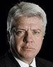
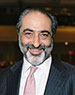
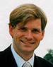
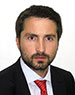

- About
- Leadership
- Insurance
- Investments
ABOUT GREENOAKS
Greenoaks Global Holdings Ltd (“Greenoaks”) is a UK-based holding company with global operations. Greenoaks’ primary business activities include insurance operations and principal investments.
Greenoaks leverages a long-term focus on innovation, technology and collaboration with strategic partners to create value across its operations and holdings.
Greenoaks was founded by Greenoaks Capital Partners LLC, alongside a group of investors and operators who have built several of the world’s leading financial services, real estate, and technology firms.
GREENOAKS
LEADERSHIP
-
Neil
Mehta -
Benny
Peretz
ADVISORY
BOARD
-

Randall
DillardGreenoaks
-
Joe
LonsdaleGreenoaks
-

Majid
ManagaljiRiverwood Capital
-
Ashok
KothariAsia Pacific Capital
-

Coenraad
VrolijkFormation 8
-
Michael
MarksAsia Pacific Capital
-

Antonis
PapantoniouA.M. Nomikos
Neil Mehta
Greenoaks
"Neil is the Co-Chairman of Greenoaks Global Holdings Ltd and the Founder of Greenoaks Capital.
Prior to Greenoaks Capital, Neil was responsible for real estate and special situations investments in India, the Middle East, and South East Asia for Orient Property Group, a $2bn Hong Kong based firm financed by D.E. Shaw & Co. Neil previously invested in private businesses at Kayne Anderson Capital Advisors, a $7bn alternative investment firm based in Los Angeles.
Neil serves as a board member to Greenoaks Global Holdings Ltd, Coupang, SOL REPUBLIC, Lolli & Pops, and other Greenoaks portfolio companies. He is also an Advisor to InK (TED India) and serves on the Harvard Business School Alumni Advisory Board. Neil holds a BSc in Government and Economics from The London School of Economics."
Benny Peretz
Greenoaks
"Benny is the Co-Chairman of Greenoaks Global Holdings Ltd and a Partner at Greenoaks Capital.
Prior to Greenoaks Capital, Benny invested in distressed financials and several restructurings for D.E. Shaw & Co, a $20bn global investment and technology firm. Prior to that, he spent a brief period at Farallon Capital, a global multi-strategy investment firm based in San Francisco, and worked with Spencer Capital Management LLC, a hedge fund based in New York."
Ashok Kothari
ASIA PACIFIC CAPITAL
"Ashok is the Managing Director of Asia Pacific Capital (APC). APC is an asset management company with experience in private equity, venture capital, mezzanine, PIPEs, listed investments, and buyouts.
Previously, Mr. Kothari served as CEO of W.R. Grace (Asia Pacific) Ltd., a diversified Fortune 50 corporation. He also served as President of PPG Industries, Europe, Middle East and Africa, a region with over 8,000 employees and sales of over $1bn.
He holds a B.E. in Mechanical Engineering from M.S. University in India, and a M.S. in Industrial Engineering from Stanford University."
Antonis Papantoniou
A.M. Nomikos
"Antonis is a senior executive at A.M. Nomikos (AMN). AMN is a third generation family business that specializes in the ownership, management and operation of dry bulk on land and sea based operations.
Prior to AMN, Mr. Papantoniou worked with Crédit Agricole CIB’s Leasing and Structured Products team structuring and arranging United Kingdom tax leases for leading maritime transportation clients. Additionally, Mr. Papantoniou co-manages Nomikos family principals on private equity investments.
Mr. Papantoniou holds a BA from Tufts University and an MBA from the Wharton School at the University of Pennsylvania"
Randall Dillard
Liongate Capital
"Randall is the Chief Investment Officer and Co-Founder of Liongate. Founded in 2003, Liongate is an investment management and research firm specialising in portfolios of hedge funds.
Prior to Liongate, Randall was a Managing Director in investment banking and Head of Merchant Banking at Nomura International. Mr. Dillard was also involved in investment banking with Merrill Lynch International.
He is a post-graduate of law and faculty Fellow of Pembroke College, University of Cambridge, in which he also founded the “Randall Dillard Fellowship” for post-doctoral research in International Relations."
Joe Lonsdale
Formation 8
"Joe is a Partner at Formation 8. Formation 8 is a venture capital firm that provides financial and strategic capital to early growth smart enterprise and energy technology companies.
Prior to Formation 8, Joe co-founded Palantir Technologies, a multi-billion dollar software company which develops mission-critical analysis systems used by government and financial organizations around the world. He is also the founder of Addepar, a leader in private wealth management technology.
Joe is Chairman of ONEHOPE Inc, a charity-focused wine brand with partners such as the Mondavi family. He earned a BS in Computer Science from Stanford University in 2003."
Michael Marks
Riverwood Capital
"Michael is a founding partner at Riverwood Capital. Riverwood Capital targets middle market technology firms in need of financial and intellectual capital to achieve superior growth and profitability on a global scale.
Michael is the Chairman of Sandisk, and also serves as director for Schulumberger Limited, Aptina, GoPro, Globant and iFly. Previously, he was the CEO of Flextronics, Inc.
He serves as a Board Member at the V Foundation for Cancer Research. Mr. Marks has a B.A. and an M.A. in Psychology from Oberlin College and an M.B.A. from Harvard Business School. "
Coenraad Vrolijk
Rosewood
"Coenraad is the CEO of Rosewood International Group. Rosewood specializes in insurance operations, providing solutions to financial and business challenges through insurance structures on a global basis.
Previously, Coenraad served as a managing director at BlackRock and was head of its Financial Markets Advisory practice in Europe, the Middle East and Africa. Before that, he was Principal at McKinsey & Co, where he lead McKinsey’s insurance practice in Switzerland.
He holds a BA and MA in Economics, and a PhD. from Brown University. "
Majid Managalji
Westmont
"Majid is Founder and President of the Westmont Hospitality Group. Majid oversaw the growth of the Westmont Group from a single hotel to one of the largest private hotel owner/operators in the world with a significant presence in North America, Europe, and Asia. In addition, the Westmont Group is involved in a number of other diverse businesses in the above regions and in Africa and South Africa.
He is the Chairman of InnVest REIT and a board member of the IREFAC (Industry Real Estate Financing Advisory Council). Mr. Mangalji holds a business degree with a double major in accounting and marketing from the University of Bradford, England."
INSURANCE OPERATIONS
Greenoaks partners with and helps build insurance companies in high growth geographies and specialty markets. Greenoaks is focused on identifying high quality insurance operations with competitive advantages that can develop into industry leaders.
Greenoaks leverages meaningful domain expertise, a dedicated ecosystem, proprietary data analytics, and strongly capitalized operations to create value for all stakeholders.
ABOUT GREENOAKS
Greenoaks makes long-term principal investments in businesses across a wide range of industries and geographies. Greenoaks seeks to identify compounding franchises, collaborate with world-class partners, and support excellent founders and managers to build industry leading companies.
Greenoaks’ investments are managed by Greenoaks Capital Partners LLC (“Greenoaks Capital”). Greenoaks Capital is a principal investment firm based in San Francisco with a successful track record of investing in and building great businesses globally.